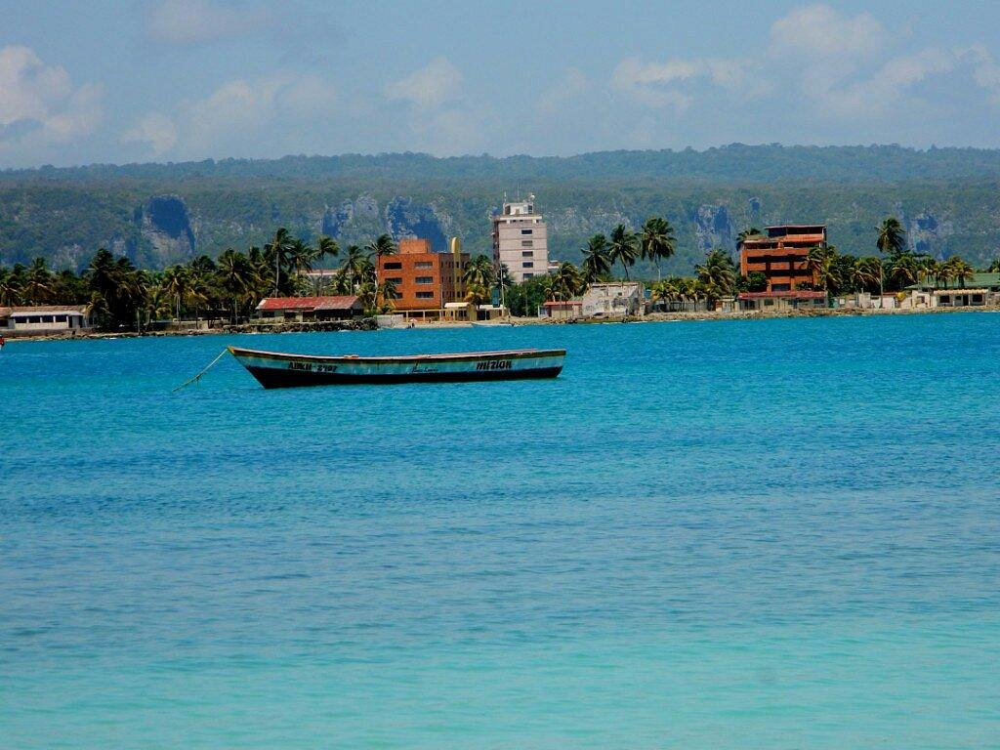
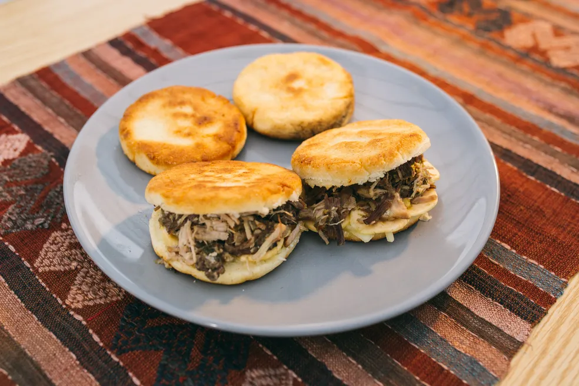
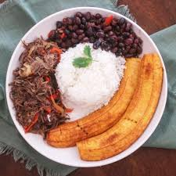
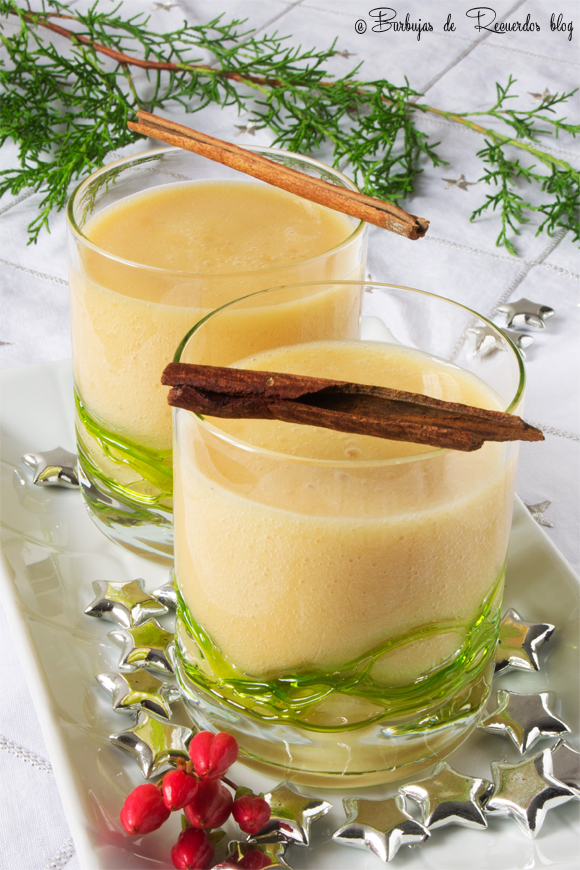
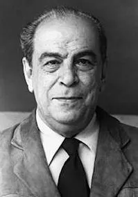
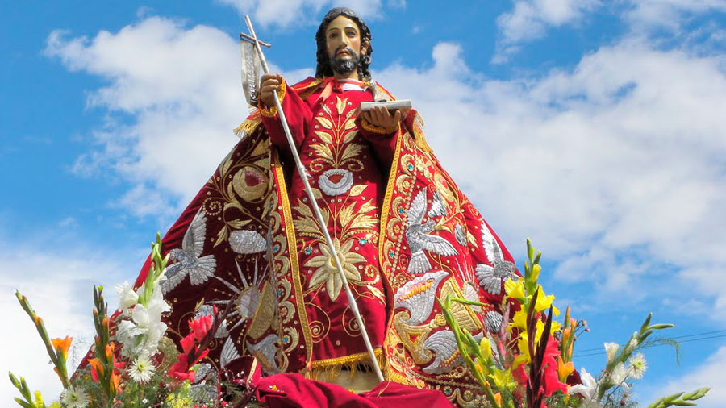
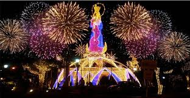

Moneda y Valorización
La moneda oficial de Venezuela es el Bolívar Soberano (VES). En comparación con el Real Brasileño (BRL), el valor del Bolívar ha sufrido una gran devaluación debido a la inestabilidad económica. En el cambio actual, 1 BRL equivale a aproximadamente 6,85 VES, pero esta tasa puede variar.

Modos de Transporte
En Venezuela, los principales modos de transporte incluyen autobuses, taxis, metro (principalmente en Caracas), y servicios de transporte por aplicación. El transporte aéreo es común para viajes entre ciudades distantes debido a la extensión territorial del país. Además, hay opciones de transporte ferroviario y marítimo para ciertas regiones.

Hospedaje
Una excelente opción de hospedaje es el Hotel Humboldt, ubicado en el Parque Nacional Waraira Repano, ofreciendo una vista panorámica de Caracas y un servicio de primera clase. Otra opción es el Hotel Alba Caracas, conocido por su comodidad y ubicación central.

Paseos en Venezuela
- Parque Nacional Canaima: Aventúrate en las bellezas naturales y en las espectaculares cascadas, incluida la famosa Salto Ángel, la caída de agua más alta del mundo.

- Los Roques: Un archipiélago paradisíaco perfecto para buceo y relajación en las playas de aguas cristalinas.

- Isla de Margarita: Conocida por sus playas e infraestructura turística, es un excelente lugar para deportes acuáticos y compras.

- Parque Nacional Morrocoy: Famoso por sus playas y arrecifes de coral, ofrece una rica biodiversidad. 
- Teleférico de Mérida: El teleférico más alto y largo del mundo, proporcionando vistas impresionantes de la Cordillera de los Andes.

Comidas y Bebidas Típicas
- Arepas: Panes hechos de masa de maíz, rellenos con diversos ingredientes. 
- Pabellón Criollo: Plato tradicional compuesto por arroz, carne desmenuzada, frijoles negros y plátano frito. 
- Chicha Andina: Bebida fermentada hecha de arroz, azúcar y canela. 
- Tequeño: Bolillo de queso frito, generalmente servido como aperitivo.

- Cachito: Bebida tradicional hecha de maíz y leche.

Puntos Turísticos y Sus Historias
- Salto Ángel: Nombrado en honor al aviador estadounidense Jimmie Angel, que descubrió la caída en 1933.

- Castillo de San Carlos de Borromeo: Fortaleza histórica en Maracaibo, construida en el siglo XVII.

- Catedral de Caracas: Un ejemplo impresionante de la arquitectura religiosa venezolana, ubicada en el corazón de Caracas.

Costumbres y Hábitos
Los venezolanos son conocidos por su hospitalidad y alegría. Suelen celebrar festivales con mucha música y baile. La familia es la base de la sociedad y los almuerzos dominicales son momentos importantes de confraternización. Además, es común que las personas se saluden con un apretón de manos y una sonrisa.

Personalidades Venezolanas
Los venezolanos suelen ser acogedores, optimistas y resilientes, incluso ante adversidades económicas. La música y el fútbol son pasiones nacionales. Personalidades notables incluyen al escritor Rómulo Gallegos y al actor Edgar Ramírez.

Un Autor Venezolano y Su Libro
Rómulo Gallegos: Uno de los más grandes escritores venezolanos, famoso por su novela "Doña Bárbara", que retrata la lucha entre civilización y barbarie en las sabanas venezolanas.
Fiestas y Celebraciones
- Carnaval: Celebrado con desfiles vibrantes y fiestas en todo el país.

- Día de San Juan Bautista: Una celebración afro-venezolana con música y bailes tradicionales. 
- Feria de La Chinita: En Maracaibo, celebra a la Virgen de Chiquinquirá con eventos culturales y religiosos. 